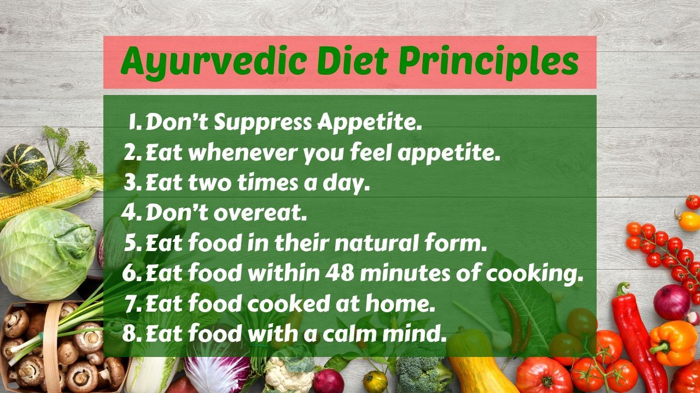
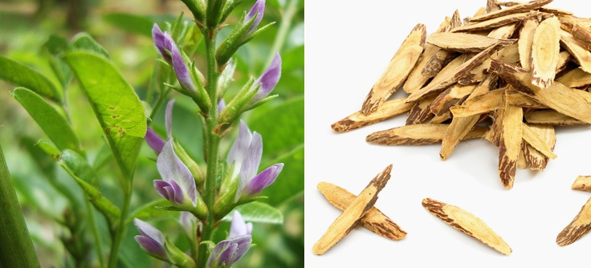
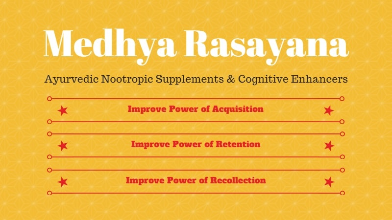
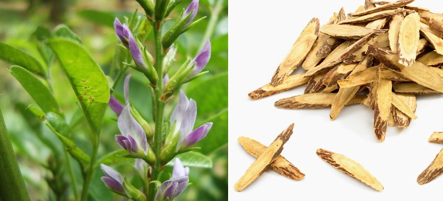
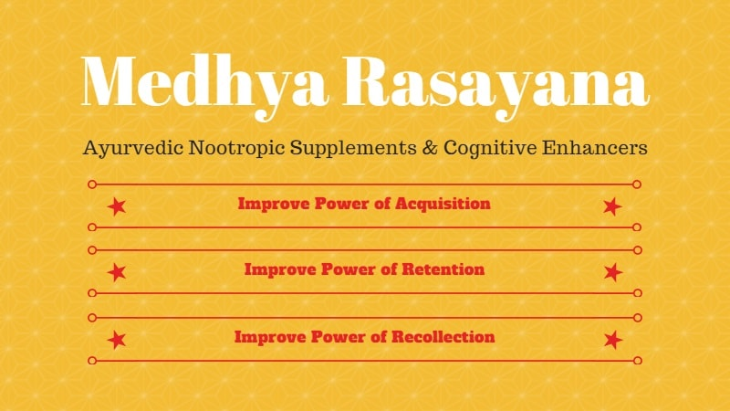

Ayurveda is an ancient Indian system of medicine and methods designed for health regulation of humans. Apart from medicines it also prescribes a certain life style- for example moderate food intake, abstinence from alcohol, taking adequate and varied nutrients from different food groups. The medicines used are whole plants or its parts like roots or flowers. Ancient sages wrote down rules for prescription. They also wrote down what would be adverse outcomes when a particular medicine was used.
Ayurveda is very much into healing that particular body part for say and allopathy also do the same but comes with various side effects and risk of reactions to other parts of the body. But homeopathy is considered completely safe as it does not react in a other way to the body, instead helps to examine the past ailments and new developments in the body with proper and regular dosage of the drug prescribed.

 


